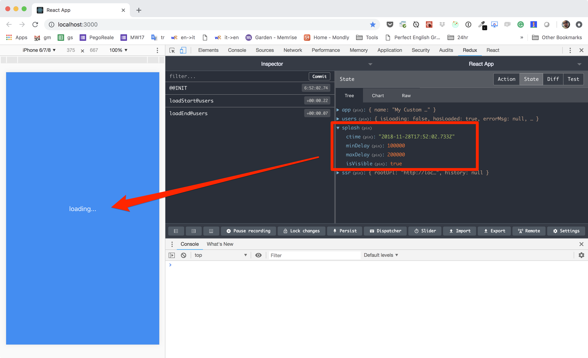

Splash Screen Feature
Is any app any good if she doesn't show a splash screen????
So let's kick this out and make our own super-duper splash screen feature.
I would like this to be a pure plug and PRAY addon to our app. It should start by covering the whole app, and move away after the users finish to load, or a loading error occour.

Upside Down
For this feature I will use an upside down approach, many refer to it as "fake it until you make it".
Basically we pretend we have done the feature already, and we start trying to use it. We will generate errors and we will do our best to fix it.
We are also going to use a cool new feature in React: PORTALS
Have a read about portale before you move on!
Step 1 - let's use it
So we pretend that the feature exists already. We still need to add it to the features manifest of our application and to the main ui.
Open src/features/index.js and change it to:
export default [
require('./users'),
require('./splash'),
]
Then open src/App.js and add the UI component:
...
import { Splash } from './features/splash'
...
class App extends Component {
render() {
return (
...
<Splash />
</div>
)
}
}
That should be enough to generate a good deal of red in your console. But it's not that bad, we obviously need the basic feature's manifest, and we also need a React component named "Splash".
Step 2 - the feature's manifest
Create the src/features/splash/index.js manifest:
export const reducers = {}
export const services = []
export const listeners = []
export { default as Splash } from './Splash.container'
This is a very simple manifest, it exports only a UI component that is supposed to show (or hide) the splash screen.
Let's move to the next step and see about it!
Step 3 - the UI
Welcome to step n.3, we are going to create 2 files. A container that deals with the application state, and a dumb component that only deals with UI.
This is a pattern that I often suggest to my collaborators because it makes it easy to work out components (the dumb ones) in isolation from the rest of the application using tools like react-styleguidist.
Let's start from the simple one and create
src/features/splash/Splash.component.js
import React from 'react'
const style = {
position: 'fixed', top: 0, bottom: 0, left: 0, right: 0,
display: 'flex', justifyContent: 'center', alignItems: 'center',
backgroundColor: '#258cf9', color: '#fff',
}
const Splash = ({ isVisible }) => isVisible
? <div style={style}>loading...</div>
: null
export default Splash
This is simple enough, it receives one single boolean variable and renders a full page div with a solid background.
Now let's move into something more spicy and create
src/features/splash/Splash.container.js
import React from 'react'
import ReactDOM from 'react-dom'
import { connect } from 'react-redux'
import SplashUI from './Splash.component'
// check on the "splash" availability, this might happen in case you
// place the <Splash /> ui component, but disable the feature.
const mapState = state => state.splash
? state.splash
: { isVisible: false }
class Splash extends React.Component {
constructor (props) {
super(props)
try {
this.target = document.createElement('div')
document.body.appendChild(this.target)
} catch (err) {}
}
render () {
return this.target
? ReactDOM.createPortal(<SplashUI {...this.props} />, this.target)
: null
}
}
export default connect(mapState)(Splash)
There is some cool stuff going on here.
Cool stuff n.1 is the mapState() function where we apply a very little bit of
logic just to see if a "splash" reducer is available.
In case it's not we don't bother showing anything. This makes our component actually independent from the rest of the feature. It will not show, but it will not crash either. I think this is quite cool.
Cool stuff n.2 is the use of the constructor to append a new DOM element
to the body, that we use in the render() via portal to place our
SplashUI component.
This technique is often used in popups. It's a cool React API.
Cool stuff n.3 is the try/catch block. Remember that our ultimate goal is to
be able to prerender this app on the server. In NodeJS there is no DOM so
document.createElement('div') will cause an exception to fire.
By adding this small wrapper we can provide a component that is resilient to SSR... in the way that it will skip rendering itself!
Step 4 - the reducer
Even if we saw that we can survive without a reducer, it might be a good idea to provide one so that the real behavior can take place.
Create src/features/splash/splash.reducer.js:
export const initialState = {
ctime: new Date(),
minDelay: 750,
maxDelay: 2000,
isVisible: true,
}
/**
* Actions
*/
export const SET_HIDDEN = 'setHidden@splash'
export const setHidden = () => ({
type: SET_HIDDEN,
})
/**
* Handlers
*/
export const actionHandlers = {
[SET_HIDDEN]: (state) => ({
...state,
isVisible: false,
}),
}
export default (state = initialState, action) => {
const handler = actionHandlers[action.type]
return handler ? handler(state, action) : state
}
And register it in your feature's manifest src/features/splash/index.js:
import splash from './splash.reducer'
...
export const reducers = { splash }
The isVisible property is quite obvious. It determins whether the SplashUI will
cover our app viewport or not. But what about the rest?
ctime, minDelay and maxDelay are utility properties that will help us
improve our user experiece. It all happens in the service.
Step 5 - the service
Create src/features/splash/splash.service.js:
import { setHidden } from './splash.reducer'
// last the SplashScreen for a minimum amoun of time
// (defined in the reducer) so to avoid a fast flickering
// effect that would produce discomfort to the user.
export const hide = () => (dispatch, getState) => {
const { ssr, splash } = getState()
if (ssr.isServer()) {
dispatch(setHidden())
return
}
const loadTime = new Date() - splash.ctime
const delay = loadTime > splash.minDelay ? 0 : splash.minDelay - loadTime
setTimeout(() => dispatch(setHidden()), delay)
}
// safety check, in case the listener don't fire we can simply
// hide the loading after a while.
export const start = () => (dispatch, getState) => {
const { ssr, splash } = getState()
if (ssr.isServer()) {
dispatch(setHidden())
return
}
setTimeout(() => {
dispatch(setHidden())
}, splash.maxDelay)
}
And register it in your feature's manifest src/features/splash/index.js:
import * as splashService from './splash.service'
...
export const services = [ splashService ]
If you are courious and want to better understan the idea behind the word "service", please have a read here. But the super short version is that a service is a redux action that may fail.
That's why you see those try/catch in this piece of code. Here we might
face a particular condition in which our code can fail:
Our service depends on 2 reducers: splash and users. The latter is
provided by a different feature and we have no control over it. As we want this
feature to be "plug and play" we need to be sure that we don't implement
hard dependencies on external resources.
When it come sto the two methods, they both try to hide the splash screen.
hide()
hide() implements a trick so to be sure that the splash screen will be visible
for at least minDelay time. This is so to avoid a flickering effect if the
loading time is too fast. Yes you hear me: we slow down things to so make
a better UX.
But in case we are rendering this thing on the server we don't want to wait anything because the full loaded content will be served to the user anyway.
start()
start() implements a fallback in case hide() is never called. After
maxDelay is passed, we wil close the curtain anyway. This also need to be
disabled in the server. No need for it.
start() is a service lifecycle method. It's been called at boot time.
You can find more informations here
NOTE: there is no place in which we call hide() so far. How does that work?
You are going to find it out in the next and last step of this guide!
Step 6 - the listener
Let's first dive into the code and then explain what is going on. Create
src/features/splash/splash.listener.js:
import { hide } from './splash.service'
export default [
{
type: 'loadEnd@users',
handler: () => dispatch => dispatch(hide()),
},
{
type: 'loadFailed@users',
handler: () => dispatch => dispatch(hide()),
},
]
And register it in your feature's manifest src/features/splash/index.js:
import splashListener from './splash.listener'
...
export const listeners = [ splashListener ]
Our state manager implements redux-events-middleware which is a super simple implementaiton of an event emitter based on Redux actions.
This file that you just created exposes a list of listeners. Each listener hook up to a redux action type and provides a "what to do" in the form of a handler function.
Here we are simply listening for events from the users feature, and we want to attach a side effect of hiding the splash screen.
What, do you use strings as action types???
Fair question. Everywhere in the net you can read that is a best practice to store action types in constants so to mitigate a misspell bug. And I couldn't agree more. In fact we do rightly so in all our reducers.
But here we want to implement a soft dependency between our "splash" feature and the "users" feature. "splash" is aware of what "users" can do, but not the other way around.
If we have "users" to export her actions, so that "splash" can import it, this will make "users" a hard dependency of "splash".
NOTE: If you are in full control of the features of your application, the hard dependency is actually the best way to go because you rely on the interpreter to trigger exceptions in the console. Everything is easier.
In this specific guide I'm just showing a possibility to use listeners to implement a plug'n play feature.